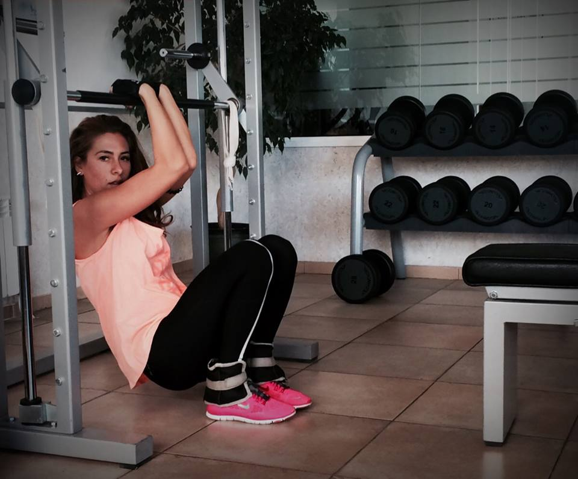

Shape Session е високо-интензивна кръгова тренировка, която обхваща всички големи мускулни групи в тялото чрез упражнения и движения, абсолютно естествени за него.
По време на тренировката се използва инерцията на собствено тегло, свободни тежести (пудовки) и съпротивлението на тренировъчни ластици, в множество повторения с минимална почивка, чрез които се развива атлетична мускулатура, издръжливост и дисциплина.
Оформящата сесия завършва с базов стречинг за цялостно разпускане на мускулатурата, предотвратяване на мускулна треска и повече гъвкавост.
Shape Session е натоварваща, но същевременно и доста отпускаща тренировка. Всяко упражение е премерено и "изцежда" най-доброто от тялото, гори калории и мазнини и те кара да се чувстваш страхотно.
Тренирайки не спестяваме нищо на организма и вземаме под внимание всяка мускулна група.
Ивелина Георгиева е създател на тренировъчната програма Shape Session. Физическото си възпитание дължи на спортен клуб по лека атлетика Левски. По-късно започва работа като фитнес-инструктор в корпоративен фитнес и се задържа там над три години. Посвещава свободното си време на Shape Session и тренировки с партньора си, с цел еволюция и достигане на индивидуални тренировъчни лимити, а също така неспирно подхранва страстта си към стречингът.
Янко Асенов започва физическото си възпитание спортувайки футбол над половин година, същото време е посветил и на уроци по плуване. След кратко прекъсване се записва да тренира академично гребане, което е един от най-тежките спортове - развива цялостната мускулатура на тялото; товари основно краката, ръцете и кръста; създава чувство за координация и работа в синхрон. За седем години е успял да стане пет пъти републикански шампион на България, като две от годините е прекарал в националният отбор по академично гребане.
Упражненията са разнообразни, основно изпълнявани със собствено тегло.
Burpee, planks, jump jack's, step-ups, arm-holds, коремни преси, упражнения със свободни тежести (пудовки), удари с чук по огромна гума, бягане, скачане, клекове и енергично темпо... са само част от "основните съставки на ястието".
В един час се забавляваме на макс, изискваме всичко от тялото и не му позволяваме да мисли за глупости.
За финал разпускаме приятно със стречинг, изпъваме всяка фибра "като локум", дишаме дълбоко и бавно, позволявайки на тялото да се отпусне след натоварването.
Понякога усещаме парене в определени части на тялото и мускулна треска, но пък чувството след това е неописуемо - не ходим по земята, а летим!
Адреси на клубовете:
Спортен клуб Нео: кв. Люлин 7, бул. Джавахарлал Неру 6, сграда на Happy, метростанция Западен парк
ТопФит-Младост: кв. Младост, ул. Атанас Москов 5, метростанция Александър Теодоров-Балан
Флайс-Младост: кв. Младост 4, сграда на Спорт Депо, метростанция Бизнес Парк
На 26-ти октомври 2015 г. се навърши една година от създаването на Shape Session!
Споделихме приятни моменти, похапвайки торта. Припомнихме си от къде тръгнахме и през какво преминахме, за да достигнем до тук.
Макар и все още в "невръстна" възраст, сме силно митивирани за едно по-добро и успешно бъдеще, изпълнено с много радост, приятни моменти и ... Shape Session!